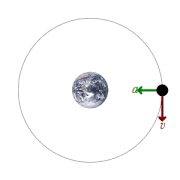

Orbita Lunar
Diagramas de movimento orbital de um satélite ao redor da Terra, mostrando a velocidade e aceleração.
Esta imagem exemplifica de uma forma bem clara a diferença de tamanho entre os planetas do sistema solar
Planetas em escalas
Fisica II - Energia e Astronomia
1° trimestre
Aula 1 Conteúdo Programado
Aula 2 Energia Cinética
Aula 3 Júpiter e Urano
Aula 4 Energia Potêncial Elástica
Aula 5 Energia Potêncial Gravitacional
Aula 6 Principio da conservação de Energia
Aula 7 Carrinho-Principio da conservação de Energia
Aula 8 Atividade Recuperação
2° trimestre
Aula 9 Conceito de Trabalho
Aula 10 Fontes de Energia Elétrica
Aula 11 Circuitos Elétricos
Aula 12 Conjução dos Planetas
Aula 13 Ligações em Serie e em Paralelo
Aula 14 Transformadores
Aula 15 Recuperação 2° trimestre
3° trimestre